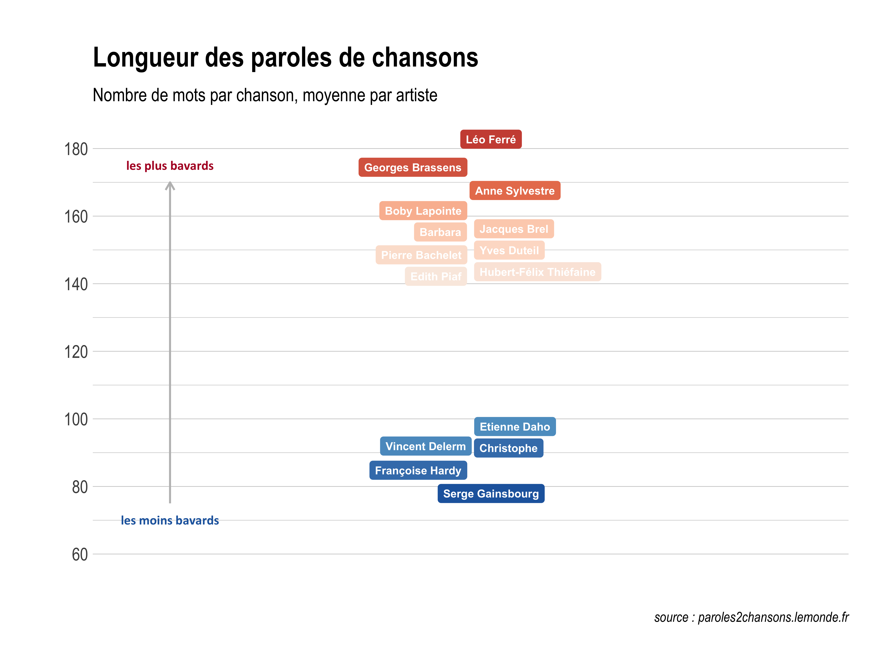

Grâce à l’implémentation de nouvelles méthodes et à leur vulgarisation notamment par le biais de R et de sa communauté (on notera le beau travail de Julia Silge et David Robinson développeurs du package ‘tidytext’ utilisé pour ce papier), l’analyse textuelle est en vogue. On peut l’appliquer à des documents littéraires mais ici on va tester ce panel d’analyses sur des paroles de chansons, en l’occurence celles des poids lourds de la chanson française.
Pour établir la liste forcément subjective des artistes old school inclus dans notre analyse, on part de cet article de topito qui recense entre autres Georges Brassens, Yves Duteil ou Sylvie Vartan, et on en rajoute quelques uns (Francis Cabrel, quand même !) pour arriver à un échantillon de 63 artistes. On va ensuite scraper les paroles de toutes leurs chansons disponibles sur le site paroles2chansons.lemonde.fr grâce aux tuyaux de Colin Fay et au package purrr (<3).
Première statistique très simple qui permet de voir que la longueur des textes est très variable :
Léo Ferré a les textes les plus longs avec en moyenne 180 mots par chanson, suivent Renaud Georges Brassens et Anne Sylvestre. Au contraire Serge Gainsbourg avec à peine 60 mots est le plus concis de tous les interprètes.
Les chanteurs et chanteuses aiment parler d’eux et de leurs états d’âme, ou tout du moins incarner leurs textes à la première personne. Michel Polnareff est le champion du ‘moi je’ alors que Léo Ferré et Georges Brassens sont dans un tout autre état d’esprit :

Les différents interprètes, qu’ils soient auteurs de leurs textes ou qu’ils fassent appel à des paroliers, utilisent un registre de mots plus ou moins étendu. Pour mesurer cette variété de vocabulaire on calcule un indice de diversité égal au ratio entre le nombre de mots distincts et le nombre total de mots. Bien sûr plus il a de chansons a son répertoire, plus l’auteur a tendance à réutiliser les mêmes mots : on visualise donc en plus de l’indicateur le résidu de la régression, les artistes usant d’une grande diversité de mots relativement à leur répertoire sont en violet (et inversement en orange).
Plutôt cohérent de trouver Brigitte Fontaine, Boby Lapointe, Georges Brassens ou Léo Ferré dans les plus créatifs des chanteurs : ils sont là les “chanteurs à textes”. A l’inverse Michel Berger, Claude François ou encore Véronique Sanson utilisent un registre plus restreint de mots : Johnny aussi, on voit d’ailleurs qu’il est l’artiste le plus prolixe en chansons (plus de 600 référencées sur le site paroles2chansons.lemonde.fr) comme en nombre de concerts donnés à son public.
On peut ensuite tenter de déceler l’humeur des interprètes à partir des mots employés dans leur chansons : chaque mot est associé à un type de sentiment (exemples : ‘accuser’ est négatif, ‘actif’ est positif) grâce au lexique de sentiments issu du package ‘proustr’. A ce jeu-là les chanteurs les moins négatifs sont Laurent Voulzy et Joe Dassin, Michel Berger étant au contraire celui qui utilise le plus de mots à connotation négative. L’emploi de mots positifs n’est pas forcément inversement proportionnel : Serge Gainsbourg est celui qui emploie un minimum de termes positifs et Yves Duteil un maximum.
Venons-en à l’analyse des mots en tant que telle avec la liste des 8 mots revenant le plus fréquemment dans les paroles de chacun de nos artistes, classés de gauche à droite :

‘Amour’, ‘vie’, ‘nuit’ et ‘vent’ sont les termes qui reviennent le plus souvent dans la bouche de nos chanteurs/chanteuses mais certains montrent une plus grande spécificite : ‘coeur’ pour Aznavour, ‘blues’ pour Eddy Mitchell ou ‘noir’ pour Nino Ferrer.
Un autre moyen de réperer ces termes spécifiques est la méthode ‘tf-idf’ qui affecte un score de sur-représentation à chaque terme selon sa fréquence dans l’ensemble des paroles des 63 interprètes. On voit ainsi des termes moins employés mais très spécifiques au vocabulaire de l’interprète, parfois à cause d’une seule chanson dans laquelle le terme en question est répété :

Enfin pour catégoriser les interprètes selon leur vocabulaire utilisé, la méthode de classification non supervisée dite du ‘topic modelling’ (dont la méthode est bien détaillée [ici]https://www.tidytextmining.com/topicmodeling.html) peut nous aider. Elle permet de discerner cing groupes d’interprètes : les termes qu’ils utilisent en priorité sont listés avec le score correspondant et les chanteurs/chanteuses qui en font partie sont détaillés dans le graphique du bas.

Johnny Hallyday et Sylvie Vartan sont dans le même groupe où ‘coeur’, ‘blues’ et ‘enfer’ reviennent souvent, probablement à cause de paroliers communs. Arthur H, Guy Béart, Gainsbourg et Bashung se retrouvent dans le groupe 5 où ‘amour’ est moins présent mais ‘mort’, ‘chanson’ et ‘enfer’ davantage. Une méthode qui semble donc plutôt cohérente pour déceler des affinités entre artistes.